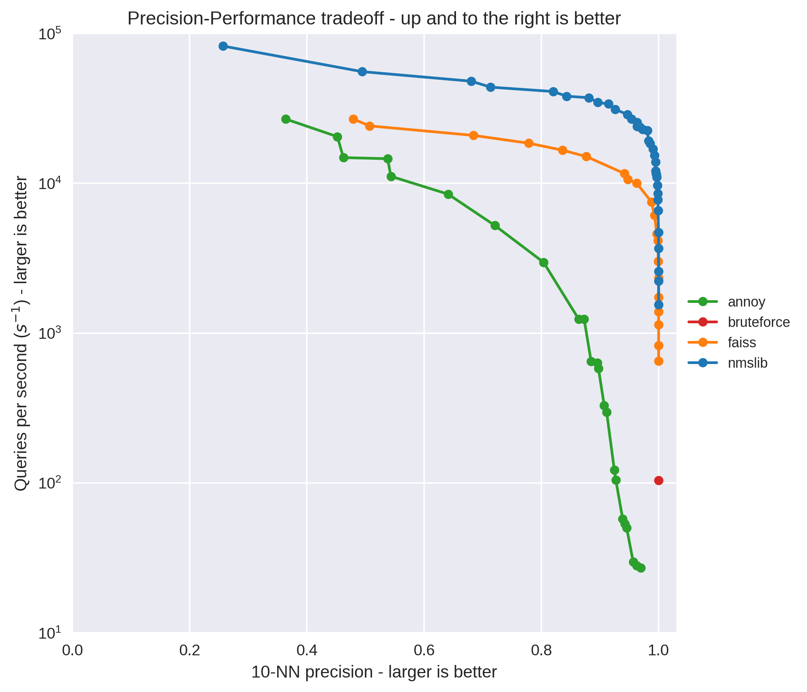

Approximate Nearest Neighbours
This library supports using a couple of different approximate nearest neighbours libraries to speed up the recommend and similar_items methods of any Matrix Factorization model.
The potential speedup of using these methods can be quite significant, at the risk of potentially missing relevant results:

See this post comparing the different ANN libraries for more details.